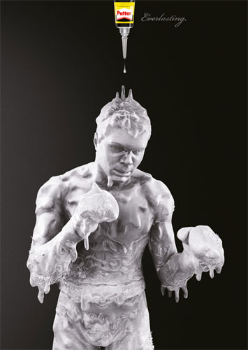
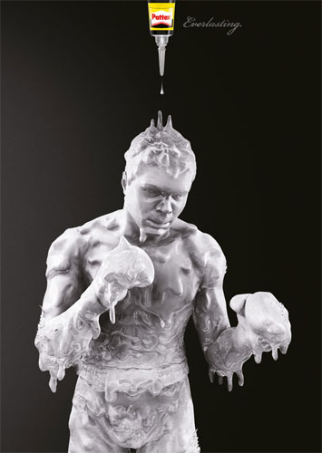

Здесь могла быть ваша реклама
 

Сменивший Ренессанс стиль барокко, в отличие от искусства Возрождения, сохранявшего дистанцию между произведением и зрителем, стремился потрясти душу. Разумеется, успешно: живописные жемчужины тех времен - истинные сокровища.
Барокко — стиль в европейском искусстве и архитектуре XVI—XVII веков. Название стиля совпадает с одноименным названием эпохи, пришедшей на смену Ренессансу. Барокко характеризируется усложнением художественной формы, больше внимания уделяется деталям, используются символы и аллегории. Часто реалистические сцены и персонажи изображены рядом с мифологическими. Картины очень эмоциональны, характерна яркость, игра цвета и теней, помпезность и изображение в преувеличенной манере. В отличие от искусства Возрождения, которое сохраняло дистанцию между произведением и зрителем, барокко стремилось потрясти душу.
Наиболее распространенная версия происхождения слова «барокко» отправляет нас к португальскому языку — La perola barroca — жемчужина неправильной формы. Несмотря на португальское происхождение слова «барокко», родиной стиля является Италия. В Риме зарождается так называемая величественная манера живописи, прославляющая католических святых, папу римского, аристократическую элиту. Популярным становится жанр парадного портрета, подчеркивающего статус человека в обществе. Правители на таких портретах часто изображены в окружении античных богов. Основные сюжеты живописи барокко — это мифология и религия. Нередко потолки зданий расписаны пышными облаками с парящими в них библейскими и мифическими персонажами.
Одним из самых знаменитых деятелей изобразительного искусства барокко является фламандский художник Пауль Рубенс. Его образы полны внутреннего движения и напряжения. Буйство красок, яркие, насыщенные тона и лучезарность создают цветовую симфонию. Фламандскому барокко известность также принесли Антонис Ван Дейк, Рембрандт, Йорданс, Снейдерс.
Ярчайший представитель итальянского барокко — Караваджо, в отличие от композитора цвета Рубенса, помещает своих героев в полумрак. Он искусный мастер резкого противопоставления света и тени. Из мрачных тонов лучи света выхватывают выразительные жесты, мимику персонажей, подчеркивая монументальность и пластическую ощутимость. Картины художника эмоциональны и динамичны, а образы максимально реалистичны. Они наполнены не аристократическим величеством, а настоящими живыми чувствами. Поэтому настолько настоящее отчаяние апостола в «Поцелуе Иуды» и настолько искреннее удивление в «Уверении Фомы».
Барокко как стиль существовало в разных странах хронологически по-разному — от 60 (страны Восточной Европы) до 250 лет (Италия). А в некоторых странах стиль барокко лучше всего отобразился не в живописи, а в архитектуре — Российская империя, Британия